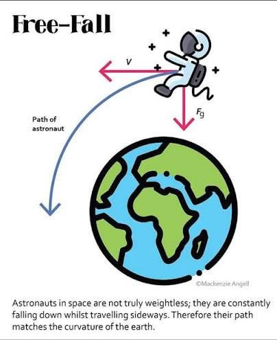

أما يخيفك أحيانًا أن شعرك لا يكفّ عن النمو؟ الماء يجري في النهر بلا انقطاع، والرياح تتحرك دومًا من طرفٍ للكرة الأرضية إلى طرفها الآخر، وخلايا جلدك تموت وتتجدد، ودمك لا يتوقف عن الجريان، والحرارة تنتقل دائمًا نحو البرودة. الأرض تدور على الدوام. إن فكرة أن العمليات متصلةٌ لا تحدث على درجات سلّمٍ منفصلة فكرةٌ غريبة. كل جسم، وكل جسيم، له جاذبية ويسعى إلى جذب شيءٍ ما نحوه. البحر الميت يجفّ في هذه اللحظة. نحن جميعًا نكره العمليات المستمرة، وإلا فلماذا لدينا أقوالٌ مثل «القِدر المراقَب لا يغلي أبدًا»؟
انظر إلى صخرةٍ في البحر، وتأمّل تجويفًا فيها. لقد استغرق تكوّن ذلك الشكل مئات الآلاف من السنين من ارتطام الأمواج بها. ألا يرعبك أن ذلك يحدث أيضًا وأنت تنظر إليها؟ حبّات الرمل صخورٌ تآكلت على مدى ملايين السنين. كان هناك زمنٌ لم يكن فيه الرمل موجودًا فعلًا في مكانٍ ما. فمتى يصير رملًا؟ ما لا أستطيع تصوّره هو كل الاحتمالات اللانهائية للأشكال التي كان يمكن أن تتخذها تلك الصخرة. هل يمكنك أن تتخيل كم يصعب التنبؤ بجريان الماء على مدى ملايين السنين؟ أيّ حيوانٍ كان بين الصخرة والموجة، وكم كانت حرارة الماء، وما مدى قوة المدّ في تلك الثانية. المتغيرات كثيرةٌ جدًا، ونحن نعيش في الكون الذي اجتمعت فيه كلها لتمنح تلك الصخرة ذلك التجويف في ذلك الموضع بالذات.
البندول المفرد سلوكه قابلٌ للتنبؤ تمامًا؛ إذ يمكنك أن تصف بدقةٍ كيف سيتأرجح وإلى متى. أما إذا أضفت إليه بندولًا ثانيًا، فإنه يصبح غير قابلٍ للتنبؤ على الإطلاق، وتبدو حركته خاطئةً على نحوٍ ما. يبدأ بالتسارع والتباطؤ بطرقٍ تبدو وكأنها لا ينبغي أن تكون ممكنةً فيزيائيًا. إنه يُظهر حركةً فوضوية، لأن طريقة حركته شديدة الحساسية للظروف الابتدائية التي تُفلته بها. وهذا نظامٌ بسيطٌ جدًا: قضيبان ونقطتا ارتكاز. تخيّل عدد المتغيرات في تيارات المحيطات، وفي دوران المدارات، وفي دوران المجرات.
ومع كل ما أخشاه من هذه الأشياء، فإن لها على الأقل نهاية. سيجفّ الماء في النهاية. ستموت، وسيتوقف شعرك عن النمو، وسيتوقف قلبك عن ضخّ دمك، وستتحلل خلايا جلدك. سيكون الكون في النهاية قد بدّد كل حرارته، فلا يبقى تمدد، ولا رياح، ولا دوران. كل شيءٍ يتوقف. الزخم محفوظ؛ بدأ من الصفر وسيعود إلى الصفر. قارن ذلك بفكرة الجنة. كنت في طفولتي أرتعب من الجنة. إنها أبدية، وهذا جوهرها. كانت تُؤرّقني ليلًا، لأن الجميع كانوا يقولون لي إنها أفضل ما يمكن تصوّره، لكنني لم أستطع أن أستوعب فكرة أنها لا تنتهي.
هذا ما يُسمّى «الأبيروفوبيا»: الخوف من اللانهاية.
لا يمكننا التفكير في الأبدية بأي مقاييس بشرية. هل يمكن للأشياء أن تصغر إلى ما لا نهاية وأن تكبر إلى ما لا نهاية؟ ولمَ لا؟ ولماذا يكون كوننا مقيّدًا بقواعد كهذه؟ هل نعيش في محاكاة؟ يقولون إن الكون يتمدد باستمرار… ولكن إلى أين؟ في أيّ شيءٍ يتمدد؟ متى بدأت الجنة بالوجود؟
ومع ذلك، نملك نحن البشر قدرةً مذهلة على أخذ مفاهيم لا يمكن تصوّرها واستخدامها. فمفهوم اللانهاية أمرٌ مسلَّمٌ به في الهندسة؛ إذ تؤول الأشياء إلى اللانهاية طوال الوقت، وتفترض أن أشياء كثيرة لانهائية. فأيّ شيءٍ بعيدٍ جدًا عن مصدر حرارة يُعدّ بعيدًا بُعدًا لانهائيًا. إن ما قد تسمعه في محاضرة هندسة أمرٌ مضحك. فإذا كان المحيط يُستخدم لتبريد محطة طاقةٍ نووية، يمكنك بكل جدية أن تفترض أن كتلة المحيط لانهائية. الخط المقارب هو خطٌ يقترب منه المنحنى أكثر فأكثر كلما اتجه نحو اللانهاية، لكنه لا يبلغه أبدًا. ومع ذلك، افترض ببساطة أنه يبلغه.
أكره التفكير في هوّةٍ لا نهاية لها يعلوها شلال. كنت أتخيل ذلك كثيرًا وأنا طفلٌ في الحمّام. لا بد أن يتوقف الماء في النهاية، لكنه لن يتوقف. الأمر يشبه أنك لو كنت في مدار الأرض، فأنت في الحقيقة تسقط باستمرار بينما تتحرك جانبيًا بسرعةٍ كبيرة تجعلك لا تصطدم بالأرض أبدًا.

هذا المقال تفريغٌ لبعض مخاوفي الوجودية، وآمل أن يكون بين قرّائه من يعرف كيف يخفّف من هذه الرهبة مما لا يُتصوَّر.

اضغط على الصورة للعودة للصفحة الرئيسية